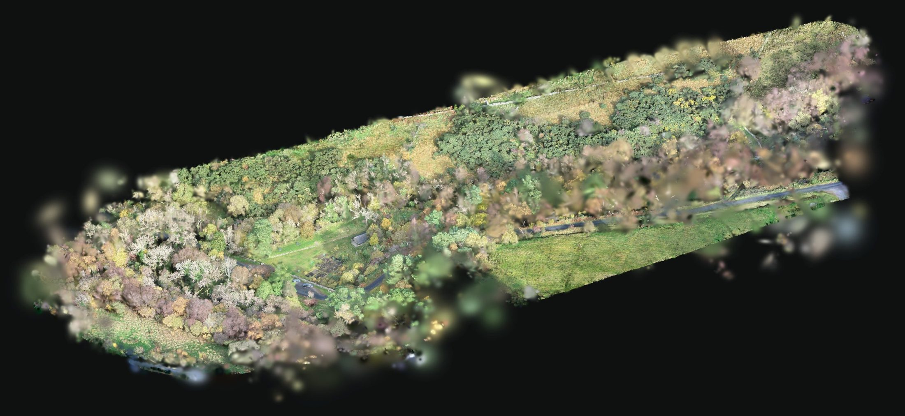
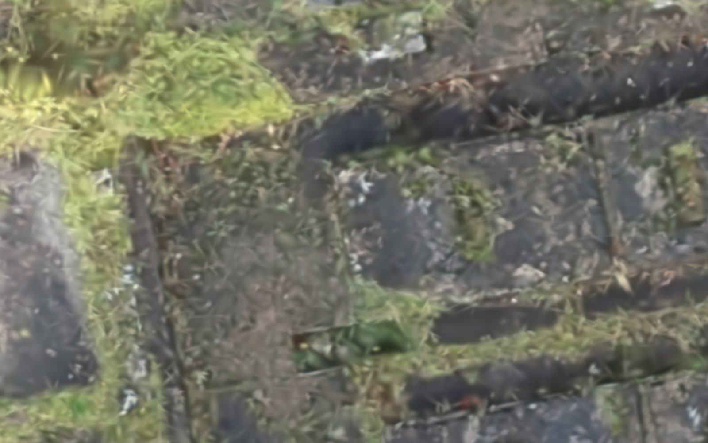
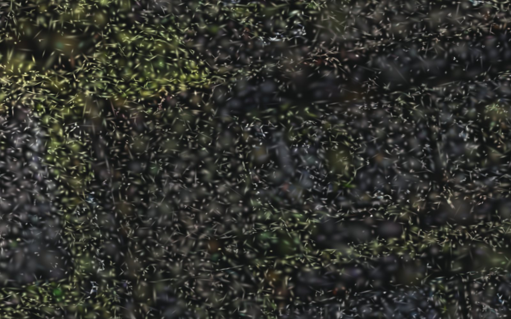
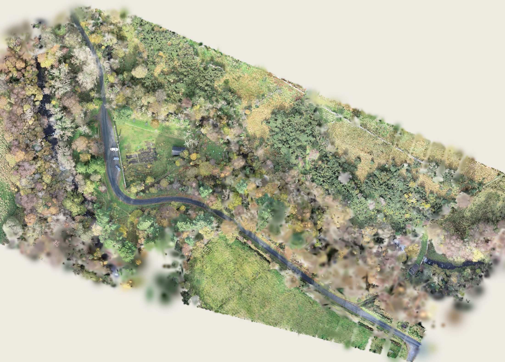
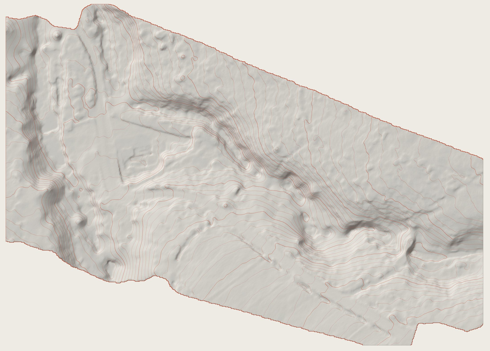
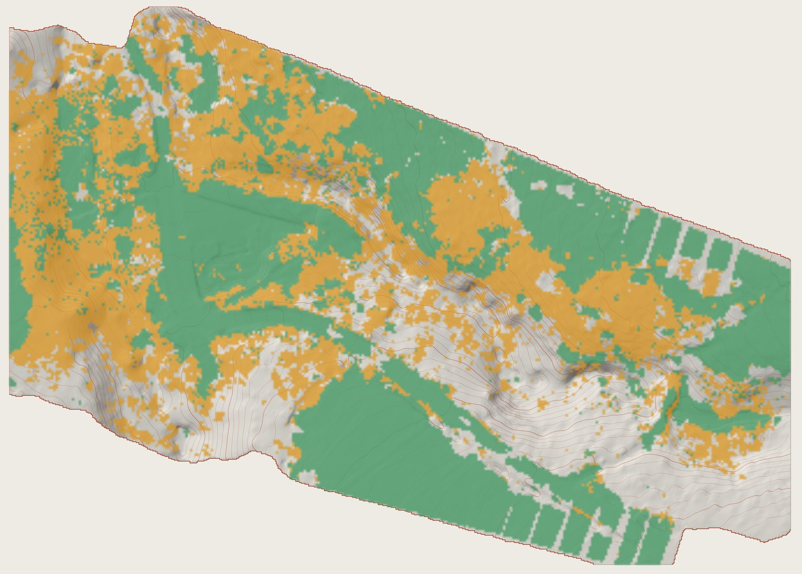
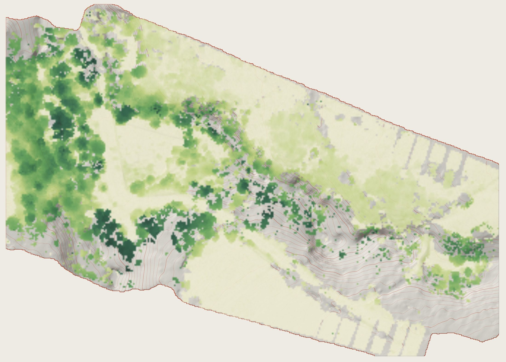
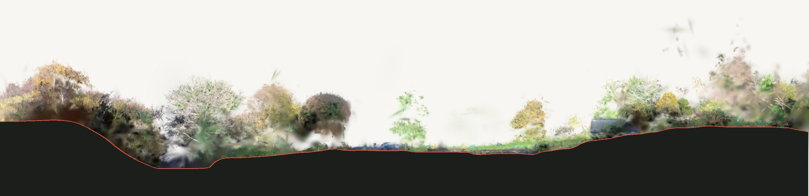

Building the site from photographs.
The lidar measured the ground. The camera on the same flight took 500 photographs, and from those the computer built a 3D Gaussian splat: nearly four million small, soft, coloured blobs that together look like the real place. It records what the mill site looks like, not what it measures.
What a splat is · The photos · Training · The file · With the lidar · What it sees · Cutting it · How good
- Photographed
- October 2025
- Photos
- 500 · DJI Zenmuse L1
- Software
- DJI Terra Education
- Training
- about 4 hours
- Splats
- 3,686,822
- Area
- about 4.4 ha

Millions of soft blobs
A lidar point is a dot. A Gaussian splat is a small, soft, see-through blob of colour, a bit like a smudge of paint in 3D. Each one has a position, a size and shape, a direction it is turned, a colour and how see-through it is. Millions of them, overlapping, make a picture that looks real from any angle. Drag the handle to pull the blobs apart.


As it looksBlobs pulled apartmill ruins from above · 16 × 10 mWhat each blob stores in this file
| Value | Stored as | Bytes |
|---|---|---|
| Position | x, y, z to 1/4096 m | 9 |
| Size and shape | three radii | 3 |
| Rotation | which way it is turned | 4 |
| Colour | red, green, blue | 3 |
| Opacity | how see-through | 1 |
| Each splat | 20 |
A typical blob here has a radius of about 5 cm; the largest 1% are over 40 cm across their long side, mostly filling in sky gaps and soft foliage. The median blob is a little more than half opaque, so the picture is built up in overlapping layers, the way a watercolour is.
500 photographs from the lidar flight
No extra flight was needed. The Zenmuse L1 carries a 20-megapixel camera beside the laser, and it photographed the site on the same October 2025 flight, with 85% overlap between neighbouring pictures. 500 of those photos were used, the most DJI Terra Education accepts for a Gaussian splat.
Why overlap matters
The computer works out the shape of the place by finding the same feature, the corner of a wall or a gatepost, in many photos taken from different positions. The more photos that see a point, and the more different their angles, the better it is placed. That is why the flight lines overlap so much.
What the camera can't see
A photo only records surfaces that face the camera and are lit. Under the canopy, inside the gorge, beneath the cars and behind walls there is little or nothing to go on, so the splat is thin or missing there. Overhead photos also see roofs and treetops far better than walls.
Guess, compare, adjust, thousands of times
A splat isn't drawn by hand or calculated in one go. It is trained. The computer starts with rough blobs, draws them from the exact position of each photo, compares its drawing with the real photo, and nudges every blob to make the difference smaller. It repeats this many thousands of times.
How Gleniff was processed
| Software | DJI Terra Education |
| Photos | 500 (Terra Education's limit for splats) |
| Camera | Zenmuse L1 · 1-inch sensor · 20 MP |
| Computer | Dell Precision 5820 · Intel i9-10900X · NVIDIA RTX A4000 · 64 GB |
| Training time | about 4 hours |
| Result | 3,686,822 splats |
Compare the lidar: its ground model took about 20 minutes of processing in the same software on the same computer. A splat takes far longer because every blob has to be learned, not just measured.
From Terra to Cesium to your browser
The full splat was exported from Terra as a .ply file: every blob stored plainly, 293 MB. For the web it was packed into a single compressed .spz file, which the Sections page loads (see below for the lighter copy). A splat can also be hosted online on Cesium ion and explored in the Gleniff Cesium story.
| In the file | Value |
|---|---|
| Format | SPZ (.spz) |
| Compression | SPZ, Niantic's open splat format |
| Full scan as SPZ | 61.8 MB |
| The same scan as a plain .ply | 293 MB |
| Splats in the full scan | 3,686,822 |
| On this website | 1,750,000 splats · 28.3 MB |
| Typical blob | about 5 cm radius |
| Median opacity | 0.62 |
| Colour | one colour per blob (no shine) |
One colour per blob
Some splats store colour that changes with the viewing angle, so wet tarmac or a window can shine as you move. This one stores a single colour per blob. It is smaller and loads faster, and on an overcast day like this survey the difference is slight. The light of that October midday is baked in: you can't change the time of day in a splat. For that, use the sun and shadow tools on the lidar ground.
Why compression matters
Stored plainly as a .ply, this scan takes 293 MB. SPZ packs each splat into 20 bytes, then zips the lot, so the file is about a fifth of the size. The faintest blobs, under 2% opaque, were left out: you can't see them, and there were 160,000 of them. Even so, 62 MB is a lot for a phone, so this website loads a lighter copy: every blob around the mill and ruins is kept, and elsewhere the smallest, faintest blobs are dropped until 1.75 million remain, 28 MB. From a distance you can't tell; up close the woodland looks a little patchier. The figures on this page come from the full scan. That is the difference between a page that loads in seconds and one that doesn't load on a phone at all.
Lined up on the survey
The splat and the lidar come out of the software in different coordinates. To use them together, the splat was fitted onto the lidar ground once: wherever the splat can see open ground, that ground should sit on the lidar surface. Drag the handle: the splat from directly above, and the lidar ground with its 1 m contours, in exactly the same frame.


Splat · from aboveLidar · bare earth346 × 248 m · north upHow well do they agree?
The fit needed a turn of less than half a degree and no change of size, because both came from the same RTK-positioned flight. After fitting, about half of the lowest blobs the splat has in each square metre lie within half a metre of the lidar ground; most of the rest are in trees and scrub. The road, the ruins and the platform carry straight across the line in the slider.
Different areas
The lidar covers about 5 ha, the whole survey. The full splat covers about 4.4 ha: nearly all of the survey, running a little past it to the east and west. The gaps are at its edges, along the south-east boundary and where the photos ran out, and there you only have the lidar.
Tops of things, not the ground beneath
Because the splat is lined up on the lidar, we can test it metre by metre. In every 1 m square, is the lowest blob on the lidar ground, or is it sitting up in the trees?


This is why the contours, sections, levels and models on this website all come from the lidar. Where the splat is amber, there is no ground in it to measure. Compare the DSM and DEM: the top of the splat behaves like the DSM.
A section through scan and survey
Put the two together and you get a section that neither could make alone: the trees, walls, cars and ruins from the splat, and solid ground from the lidar. On the Sections page you can cut it anywhere, look either way, take off the canopy and print the ground at 1:200.

Good to look at, careful to measure
A splat is trained to look right from where the photos were taken, not to be right everywhere. Know its limits before you rely on it.
- Scale and position come from the drone's RTK positions for each photo, so the splat is the right size and fits the lidar closely, as section 05 shows. Individual blobs are not measurements.
- No ground under trees. Section 06: 44% of the splat sees only the tops of things.
- Floaters and haze. At the edges, and where few photos overlap, blobs smear and float. They are visible round the outside of the view at the top of this page.
- Thin things such as wires, fence rails and bare branches become soft or ghostly.
- Things that moved while the photos were taken, such as people, leaves in wind or a car driving off, blur or vanish. The parked cars stayed put, so they are in it.
- Walls and undersides are weak because most photos look down.
Use the splat for
- what the place looks like: materials, colour, vegetation
- views and walkthroughs
- the backdrop to a section
- recording the site's character (Task B)
Use the lidar for
- levels, contours and slopes
- the ground in a section
- your physical model
- the facts of the site (Task C)
Photographs and splat by Ray McNally, ATU Sligo Department of Architecture: DJI Matrice 300 RTK with Zenmuse L1, trained in DJI Terra Education, hosted on Cesium ion. Figures on this page are drawn directly from the splat file and the lidar survey.